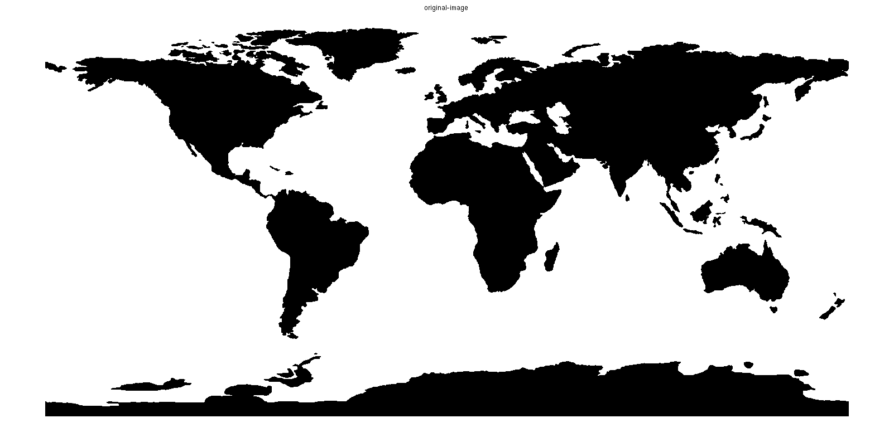
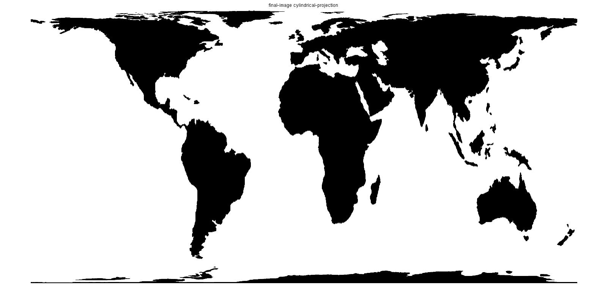
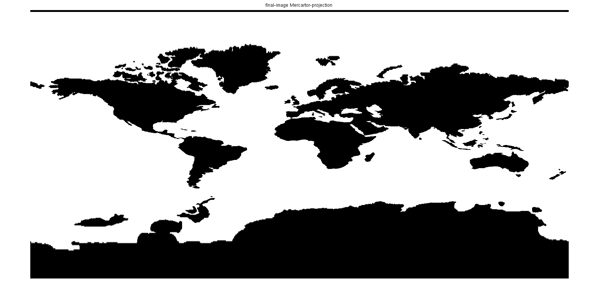
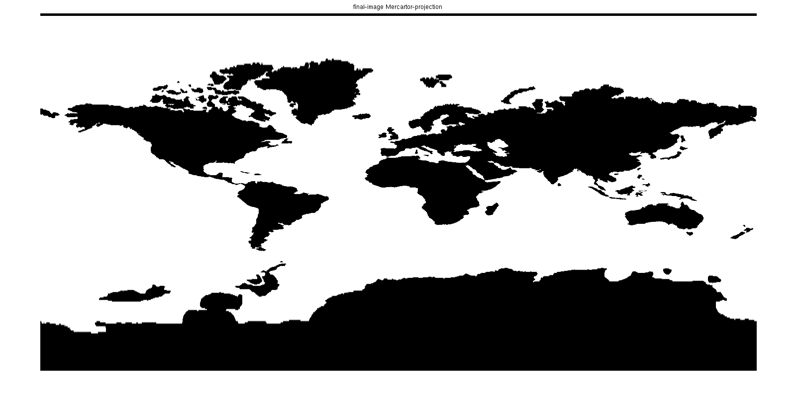

Abhijeet Kumar
CSD 201302197
% geometric transformation for a map % q4 % read the given image img = double(imread('map.gif')); img_size = size(img); b = img_size(2)/2; l = img_size(1)/2; % part a % Cylindrical projection %center of the image to be trated as origin ... %(problem defn of latitude and longitude) domain_min_l = -pi/2; domain_max_l = pi/2; domain_min_b = -1; domain_max_b = 1; step_b = ( domain_max_b - domain_min_b ) /b/2; step_l = ( domain_max_l - domain_min_l ) /l/2; [ x_original y_original ] = meshgrid( domain_min_b+step_b :step_b : domain_max_b... , domain_min_l+step_l :step_l : domain_max_l ); % subscript to index for all points in the final image range_min_l = -1; range_max_l = 1; range_min_b = -1; range_max_b = 1; step_b = ( range_max_b - range_min_b ) /b/2; step_l = ( range_max_l - range_min_l ) /l/2; [ img_new_x img_new_y ] = meshgrid( range_min_b+step_b :step_b : range_max_b... , range_min_l+step_l :step_l : range_max_l ); %inverse transformations on coordianates img_old_x = img_new_x; img_old_y = asin( img_new_y ); %interpolation to calculate values at required coordinnates (these are direcly mapped to img_final points) img_final = interp2 (x_original, y_original, img, img_old_x, img_old_y ); %show the images figure; imshow(img); title('original-image'); figure; imshow(img_final); title('final-image cylindrical-projection'); % part b % Mercartor projection %center of the image to be trated as origin ... %(problem defn of latitude and longitude) del=0.1 ; domain_min_l = -pi/(2+del); domain_max_l = pi/(2+del); domain_min_b = -1; domain_max_b = 1; step_b = ( domain_max_b - domain_min_b ) /b/2; step_l = ( domain_max_l - domain_min_l ) /l/2; [ x_original y_original ] = meshgrid( domain_min_b+step_b :step_b : domain_max_b... , domain_min_l+step_l :step_l : domain_max_l ); % subscript to index for all points in the final imagerange_min_l = -1; range_min_l = log(tan(-pi/2/(2+del)+pi/4)); range_max_l = log(tan(pi/2/(2+del)+pi/4)); range_min_b = -1; range_max_b = 1; step_b = ( range_max_b - range_min_b ) /b/2; step_l = ( range_max_l - range_min_l ) /l/2; [ img_new_x img_new_y ] = meshgrid( range_min_b+step_b :step_b : range_max_b... , range_min_l+step_l :step_l : range_max_l ); %inverse transformations on coordianates img_old_x = img_new_x; img_old_y = 2*(atan(exp(img_new_y))-pi/4); %interpolation to calculate values at required coordinnates (these are direcly mapped to img_final points) img_final_2 = interp2 (x_original, y_original, img, img_old_x, img_old_y ); %show the images figure; imshow(img); title('original_image'); figure; imshow(img_final_2); title('final-image Mercartor-projection'); 
 
